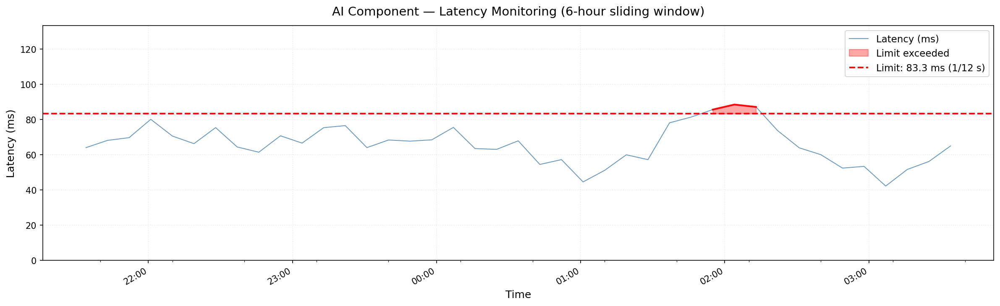
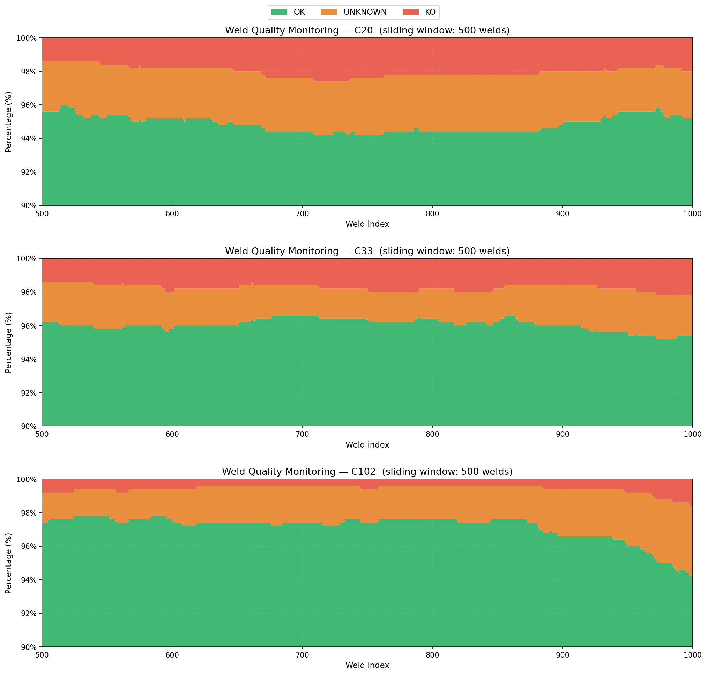
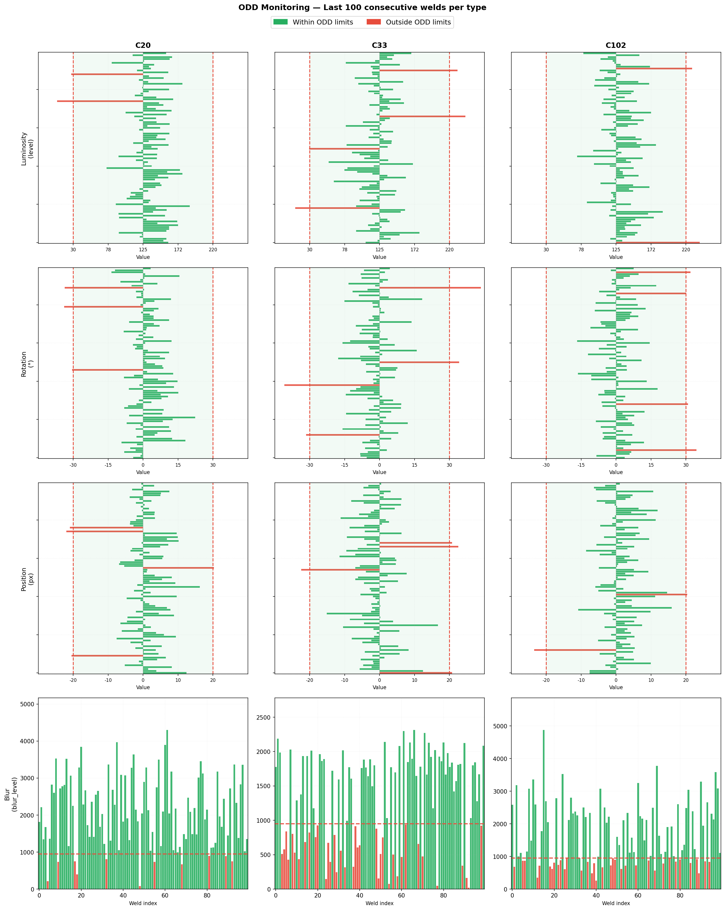

Artefacts
This page describes few Artefacts for the way AI component predictions & KPIs could be presented to stakeholders.
STAKHOLDERS
We will consider the following stakeholders:
- Project Manager
- Operator
- Quality supervisor
- AI Engineer
- Data Engineer
to which various artefacts are associated
Operator
As an operations centered developement we shall consider first the point of view of the operator. As the primary human responsible of the weld defaults detection and main user of the AI component, the operator has the folowwing requirements:
- Visualization of:
- the various weld images:
- the weld ID
- the weld type
- the localization of the weld defaults if any
- the prediction result:
- OK / KO / UNKNOWN status
- confidence score
- the various weld images:
- Selection & Validation:
- Selection (by finger touch) of the OK images (= weld without defaults)
- Validation of the selected images (= OK images)
- Visualization of the following metrics:
- Latency vs acceptance limit
- the actual percentages of OK, KO & UNKNOWN vs allowable limits
- the OOD detector metrics for each type of weld:
- measured luminosity vs ODD range
- blur level vs ODD range
- rotation vs ODD range
- weld position vs ODD range
- Raise of Warning / Alarm in case the following events occur:
- AI component issues:
- Latency gets over allowable limit (something may have to be fixed on the AI component working conditions)
- Production line issues:
- percentage of KO or UNKNOWN gets over allowable limits for a certain weld type
- an ODD related metric gets OOD
- AI component issues:
2 screens should be used by the operator:
Operator Screen 1 (touch):
inputs:
- series of successive images
- associated meta data (weld id & timestap)
- prediction
- probability for each prediction class (OK / KO / UNKNOWN)
 To be added : prediction probability for each prediction class
To be added : prediction probability for each prediction class
Operator Screen 2 (metrics & warning / alarm raising)
A second Screen (not necessarily touch) should display the following artefacts (Warning : The following artefacts for Operator Screen 2 have been prepared on synthetic data sometimes based on actual distributions & thresholds as determined by analysis of the dataset)
Latency monitoring
(for real time anomaly detection)

Quality monitoring
(for real time increasing default rate detection)

The lower diagram shows what a typical rate of OK could look likeODD monitoring
(for real time OOD detection)

Data drift
A specific dashboard should be added to allow the operator to detect and raise warnings in case of data drift
Project Manager
The project Manager is the product owner of the AI component in all its aspects and all its phases (development, training, validation, operation, maintenance). As such he is part of the audience of any artefact created in the project. In addition to artefacts mainly dedicated to other stakeholders, the project manager should have its own specific dashboards that allows her/him to have an overview on the overall performance and thrustworthiness of its AI component. We would typically consider a specific dashboard for each single phase as follows: